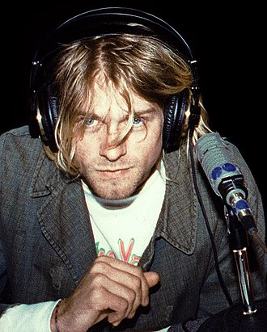

Kurt Donald Cobain (February 20, 1967 – April 5, 1994) was an American singer-songwriter and musician, best known as the guitarist, primary songwriter and frontman of the rock band Nirvana.
Through his angst-fueled songwriting and anti-establishment persona, Cobain's compositions widened the thematic conventions of mainstream rock music. He was often heralded as a spokesman of Generation X and is considered to be one of the most influential musicians in the history of alternative rock.
